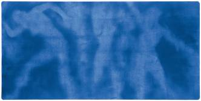
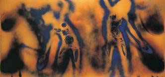
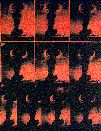
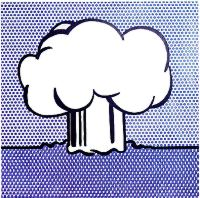
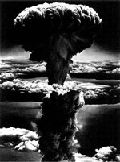

|
|

Yves Klein: Hiroshima (Anthropométrie 79), 1961
|

Yves Klein: Peinture Feu Couleur # 1, 1961
|
Ben Vautier: Accidents and Catastrophes, 1961.
The
plastic beauty of certain photos of catastrophes, of accidents,
led me in June 1961 to set my signature to the crushed and tangled
bodywork of a car that had hit a tree.
Then, carried away by my creative élan, I signed:
AGADIR:
Earthquake (board carrying documentation)
FRÉJUS: The dam which, giving way, caused the death of
300 people.
HIROSHIMA: As I remember is one of the most successful examples
of this category of artwork created by the genius of man, and
even if artistic intention was lacking, we can only congratulate
ourselves on its esthetic reality.
Ben
Vautier: War between the USSR and the USA, 1962.
The
extraordinary destruction of a war between these two Nations would
be a gigantic esthetic vision.
|

Andy Warhol: Atomic Bombs, 1964.
|

Roy Lichtenstein: Atom Burst, 1966.
|
|
Robert Longo: Russian Bomb, Semi Palatinsk, 2003.
|

Robert Longo: Nagasaki, 2003.
|

Robert Longo: Study for Crossroads, 2003
|
Robert Longo: Study for Monroe, 2003
|
|
|
|
|